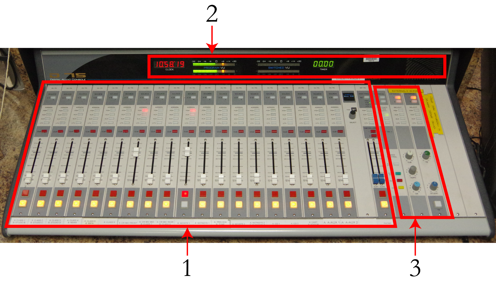
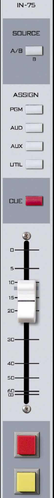
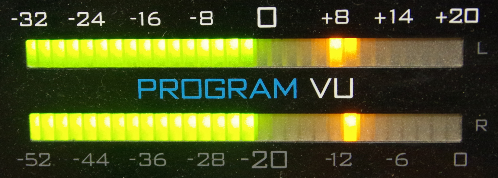
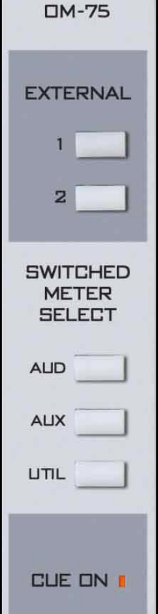
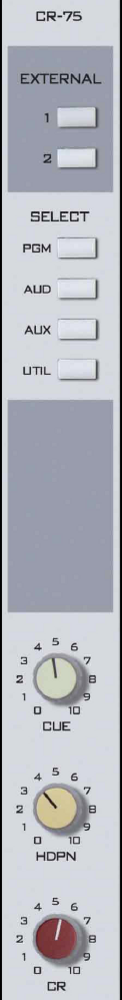
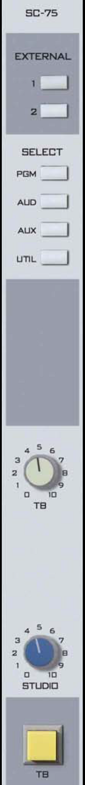
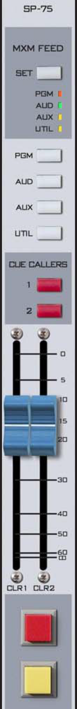

9. Station Operations
This part covers in detail the equipment that every operator will use during a DJ shift. Chapter A covers the audio mixing console in complete detail. Everyone needs to know how to use the input channels and the VU meters. Usually only news and sports will need to know how to use the SuperPhone module. Nevertheless, all of the instructions are here. Chapter B is a tour of Studio A. First it covers the audio console and explains to what piece of equipment each channel is connected. Then it shows a map of the room and lists what pieces of equipment are in each location. Chapter C contains some additional information about the microphones in Studio A. Chapter D explains how to obtain a new weather forecast. Chapter E covers the Modulation Monitor.
Part 10 covers the auxiliary equipment that only a subset of operators will use.
9.A. AudioArts D-75 Audio Console
The AudioArts D-75 console is the wide two-tone gray device with slide-faders, lights, and buttons. It sits on top of the counter in front of the window in Studio A. The D-75 is an audio mixer commonly known as "the board" or "the console". It is the hub for all audio within Studio A. If you want to play something on air; it has to go through the console. The console seamlessly mixes audio from multiple sources together.

The console consists of three major sections: the nineteen source channels (1), the monitoring controls (3), and the meter bridge (2).
Each source is connected to a channel on the console. Each channel consists of an A/B Source button, four buss assignment buttons, cue assignment button, slide-fader, and on/off buttons.
The meter bridge consists of two sets of LED bar-graph VU meters, a clock, cue speaker, and a timer. One VU meter is fixed to the Program (PGM) buss, the other switches between different busses.
The monitoring controls allow the operator to adjust the volume of the headphones, control room speakers, studio speakers, and the cue speaker. Other controls allow the operator to use the timer, change which signal plays through the various speakers, and talk to the classroom studio.
|
The audio consoles in Studios C and D are smaller (12 channel) versions of the same console. Except for the number of inputs, everything that applies to the Studio A console applies to the Studios C and D consoles as well. |

9.A.1. Source Channels on the Console
The nineteen (19) source modules take up the bulk of the console. Each module controls a single audio channel.
-
A/B Source: This button allows the station to connect two different sources (A and B) to the channel and allows the user to toggle between them. The button illuminates when the B source is selected. The button will be dark when the A source is selected.
Example: Channel #4 has Classroom Mic 4 connected to source A, and the PGM output of the Newscenter console connected to source B.
For brevity, this manual will say Classroom Mic 4 is on #4-A and the Newscenter is on #4-B.
-
Buss Assignment: These four buttons allow you to assign the channel to the different output busses. The D-75 has four output busses. The important one for DJs is the Program (PGM) buss. This is the buss that is sent to the transmitter. Any source you want to go over the air must be assigned to the Program (PGM) buss. Assigning a channel to a buss is called putting it "in" that buss. E.G. "in Program" or "in Audition".
-
Cue: This button toggles the channel in and out of the cue buss. The cue buss allows an operator to preview a piece of audio, such as a song, off-air before playing it for the general public. A channel can be both in cue and on-air. If you want to listen to something only in cue, the channel has to be off.
-
Slide-Fader: The fader adjusts the level of the audio going through the channel. Sliding the fader upward increases the level, sliding it downward decreases the level.
For most sources, the fader should be set at or near the shaded gray mark (-12). (But do not forget to watch the VU meters, they tell the real story.)
-
On / Off Buttons: The red button turns the channel on and places it on-air. The yellow button turns the channel off and removes it from the air.
For technical reasons, you should turn off any channel you are not using for your program. Every active channel adds a tiny amount of noise to the audio mix.
|
The four output busses are PGM, AUD, AUX, and UTIL. These are pronounced Program, Audition, Auxiliary, and Utility. |
9.A.2. VU Meters on the Console
Watching your VU (volume unit) meter levels is the most basic procedure in any type of radio, television, or recording situation. Your job is to ensure that the levels of the broadcast stay consistent.
Every sound broadcast over WMUL‑FM from Studio A is measured on the two Program VU meters on the D-75 console. The console has two pairs of LED bar-graph VU meters. The left-hand set is solely for the Program (PGM) buss, the other set can be switched between different sources. The top bar-graph is the left channel and the bottom is the right channel.

The meters are marked with two scales. The top scale runs from -32 to +20. The bottom scale runs from -52 to 0. The different scales reflect differences in the way audio is scaled when it is analog versus digital. You do not need to worry about these differences, focus on the top scale. The LEDs are green below 0, yellow/amber from 0 to +16, and red above +16.
The VU meter shows both VU and "peak". The meter pictured above is displaying approximately -2 VU and approximately +8 peak. The reading of interest is the VU reading, -2.
|
When this manual makes reference to VU levels, it will always refer to the top scale, -32 to + 20. Every signal fed into these meters should read between -16 and 0. |
9.A.2.a. Controlling the Levels
-
Each white fader on the D-75 console controls the levels of one piece of equipment at any one time.
-
Different pieces of equipment send out signals of different strengths.
-
Two different cuts, CDs, records, or carts will send out signals of different strengths, even when played on the same machine.
-
Two different people talking into microphones will send out signals of different strengths.
-
The levels should be adjusted manually to compensate for these differences.
-
The VU meters must stay generally between -16 and 0. It is okay if they jump around and occasionally bounce past those limits. Only a steady tone (a sine wave) will keep the meters hovering in one place.
-
If the meters are in the yellow or red areas, slide the fader controlling the piece of equipment in use DOWN until the meters stay between -16 and 0.
-
If the meters are generally below -16 on the scale, slide the fader controlling the piece of equipment in use UP until the meters stay between -16 and 0.
As you gain experience, you will learn how to see any problems with your levels with just a glance and a quick slide of the fader. At first, though, you will have to make a conscious effort to keep the levels within the -16 to 0 range.

9.A.3. Switched VU Meters
The right-hand set of VU meters are the switched meters. They can show the levels of either the AUD, AUX, UTIL, or Cue busses.
The controls for the Switched VU Meters are on the right-hand side of the console, above the controls for the timer. They are in the fifth module from right, counting the blank modules. The label at the top of the module reads "OM-75".
Any time any source is in cue, the meter will show the levels of the cue buss. The "CUE ON" LED will illuminate when this is happening. If nothing is in cue, then the levels of the selected buss are shown.
External 1 and 2 may also be selected; however, nothing is connected to these externals. The VU meters will give no reading if one of the externals is selected.
9.A.4. Using the Cue
If you want to listen to an audio source without placing it on-air, you can put the source in cue. Instead of going over the air, the audio will play through a small speaker built into the meter-bridge.
-
Press the yellow or white off button to make certain that the channel is not on-air. A channel can be both in cue and on-air. Press the off button to make certain that does not happen.
-
Press the red "cue" button just above the fader. The button will illuminate.
-
Adjust the "Cue" volume knob to approximately "5". It is on the right-hand side of the console, above the "CR" (Control Room) and "HDPN" (Headphone) volume knobs, in the fourth module from the right (including the empty modules).
-
Play the audio you wish to preview. It will emanate from the cue speaker on the right-hand side of the meter-bridge.
-
When you are finished using the cue, press the red "cue" button again. You can also place the item directly on-air by pressing the red on button. The channel will be automatically taken out of cue when the channel is turned on.
9.A.5. Using Cue with the Computer Playback (Automation)
The computer playback system has a dedicated channel on the console for previewing audio. It is channel #12-A "Preview". One preview serves both Rivendell 1 and Rivendell 2 in Studio A. See 14.H. Previewing Audio Before Playback on Page 35 in Volume III.

9.A.6. Using the Monitor Speakers and Headphones
Two monitor speakers are located near the console. They are controlled from the Control Room module on the right-hand side of the console. It is the fourth module from the right, with three volume knobs. The label at the top reads "CR-75".
The "CR" knob controls the volume of the monitor speakers. Turn it up to about "5".
The "HDPN" knob controls the volume of the headphones. Start this control at "3" and adjust from there.
The speakers will automatically mute any time an operator turns on one of the control room or "CR" microphones. This prevents feed-back from occurring between the speakers and microphones.
The six buttons at the top control which source you are listening to through the monitor speakers and through the headphones. Always select "External 1" (the button will illuminate) unless the Delay Box is in use. When the Delay Box is in use, select "External 2".
"External 1" is the station’s AIR signal: the station’s audio after it has been transmitted over the air. "External 2" is the W-PGM signal, the audio being sent to the transmitter but before it goes through the Delay Box.
If you come in and anything other than "External 1" is selected, let the Student Manager or Operations Manager know. Leave one of them a note in the appropriate mailbox. "External 2" will be selected only when the Delay Box is in use.
It is an FCC requirement for each station to monitor its AIR signal whenever the Delay Box is not in use.

9.A.7. Using the Classroom Studio Speakers and Headphones
Two speakers are mounted in the ceiling of the Classroom Studio (CB 201). Headphones are available on the public affairs table. 11.C. The Public Affairs Table on Page 117 in Volume II.
The Studio module on the right-hand side of the console controls both the speakers and the headphones. It is the third module from the right, with two knobs labeled "Studio" and "TB". The label at the top reads "SC-75".
It controls which audio is going to the speakers and headphones and controls the volume of the speakers. Volume controls for the headphones are on the public affairs table. (The "HDPN" knob on the audio console only controls the headphones in Studio A.)
The six buttons at the top control which source plays through the speakers and the headphones. Always select "External 1" (the button will illuminate) unless the Delay Box is in use. When the Delay Box is in use, select "External 2".
"External 1" is the station’s AIR signal, the station’s audio after it has been transmitted over the air. "External 2" is the W-PGM signal, the audio being sent to the transmitter but before it goes through the Delay Box.
9.A.7.a. Speakers
The "Studio" knob controls the volume of classroom speakers. Turn it up to "5" to start and adjust as needed.
An amplifier in the rack next to the public affairs table must also be turned on. It is a metallic burgandy device that is labeled "Rolls" on the left-hand side and "ABC Window" in the center. The power switch is on the right-hand side. The knobs toward the left-hand side control the volume of each individual speaker. Turn those up to the center position position and adjust as needed.
The "Studio" knob on the console and the knobs on the front of amplifier work together to control the volume. The "Studio" knob on the console is the master volume control: it adjusts the volume of both speakers together.
The Classroom Studio speakers will mute any time that any of "Class Mic" 1-6 are active. They will not mute if only Class Mic 7 or 8 are active.
|
Control Room is the room containing the audio console Studio is an attached room with additional microphones. These definitions have their basis is the history of radio. Historically, the announcer and the person running the board were different people in different rooms. In the 1993-2004 TV series "Frasier", Roz Doyle was in the Control Room and Frasier Crane was in the Studio. |
9.A.8. Talking Back to the Classroom Studio
It is possible to talk to the classroom studio through the microphone in Studio A without going over the air. Your voice will be heard in both the speakers and the headphones in the classroom studio.
-
"CR Mic Front" must be turned off.
-
Turn the "TB" knob on the Studio module up to approximately "8".
-
Press and hold the yellow "TB" button at the bottom of the Studio module.
-
Speak into "CR Mic Front".
-
When you have finished speaking, release the "TB" button.

9.A.9. The SuperPhone Module
The SuperPhone module is a special module that makes it easier to bring in sources such as phone callers, remote broadcasters, and other studios. It is the sixth (6th) module from the right, counting the empty modules.
It has the capability to place two callers on-air simultaneously. It automatically generates a "Mix-Minus" feed for each caller. Each caller gets a feed of the station and the other caller, but not themselves.
The "MXM Feed" and "Set" buttons at the top control which of the console’s busses is the source for the mix-minus feed. Use the "Set" button to rotate through the different feeds. Typically, the station uses either the PGM or AUD buss. Whatever channels one wants to send to the caller must be in the selected buss.
The "cue callers" buttons allow the operator to speak with the callers before placing them on the air. Any time a caller is in cue, and "CR Mic Front" is turned off, the audio from the "CR Mic Front" is routed to the caller(s) in cue.